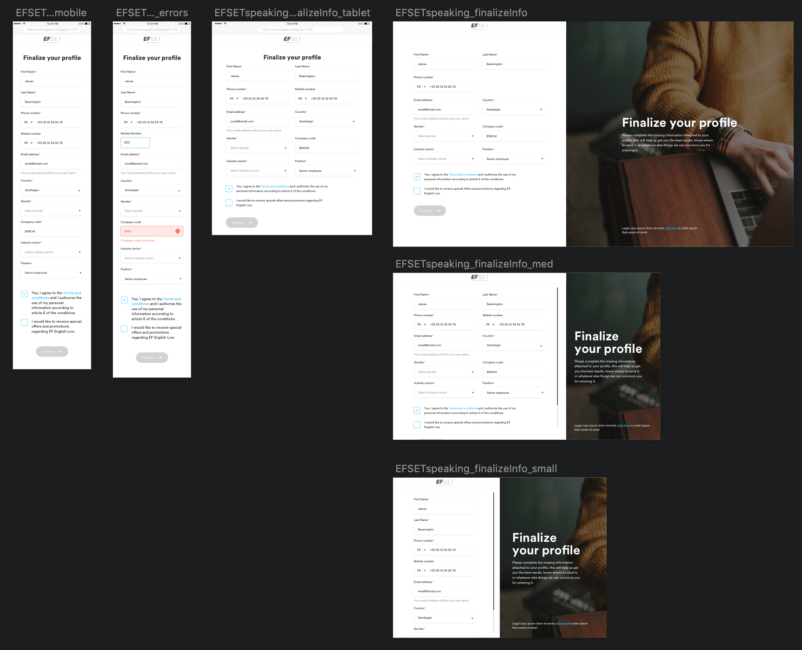

The Challenge
At EF, there have been a variety of things to do. Despite being "in-house", being involved with product, marketing, and corporate business units has kept a variety in the work I've done.
The Process
Multiple projects, multiple product owners, varying requirements, one EF.
A balancing act: of time management, of business goals, yet keeping it all together under one umbrella so to speak
by considering the grand unified design others at the company have worked on, and how these projects and goals
fit with that of overall EF global goals.